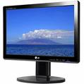
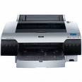

BERIKUT INI ADALAH KOMPONEN-KOMPONEN KOMPUTER
| No |
Nama |
Keterangan |
Gambar |
| 1 |
Komputer |
Komputer merupakan mesin elektronik dan dapat digunakan di berbagai tempat |
 |
| 2 |
Keyboard |
Keyboard memiliki beberapa kunci di antaranya: kunci huruf, kunci angka, kunci fungsi dan lain-lain |
 |
| 3 |
Monitor |
Monitor dapat diklasifikasikan menjadi dua, yaitu: monitor satu warna dan monitor berwarna |
 |
| 4 |
Mouse |
Mouse berputar pada sebuah bola karet dan memiliki dua atau tiga tombol di atasnya |
 |
| 5 |
Printer |
Ada beberapa jenis printer yaitu: Laser Printer, Inkjet Printer, Daisy Whell Printer dan Dot Matrix Printer |
 |